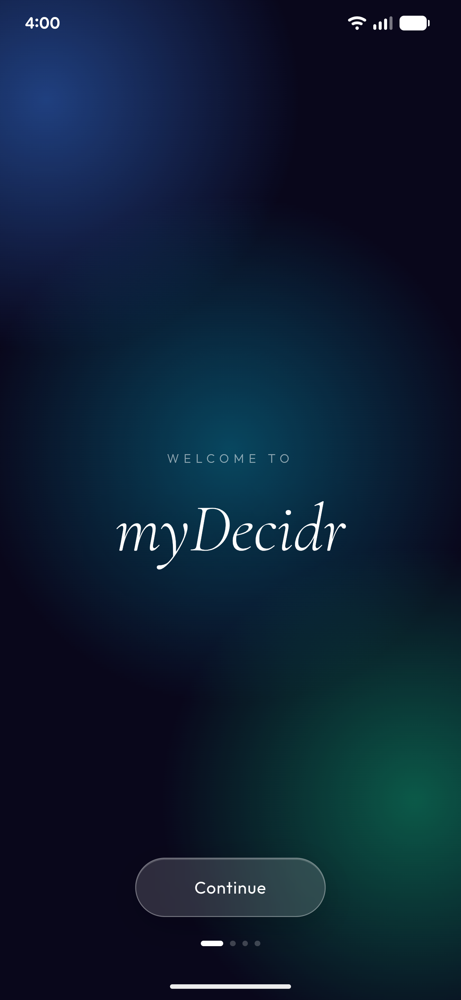
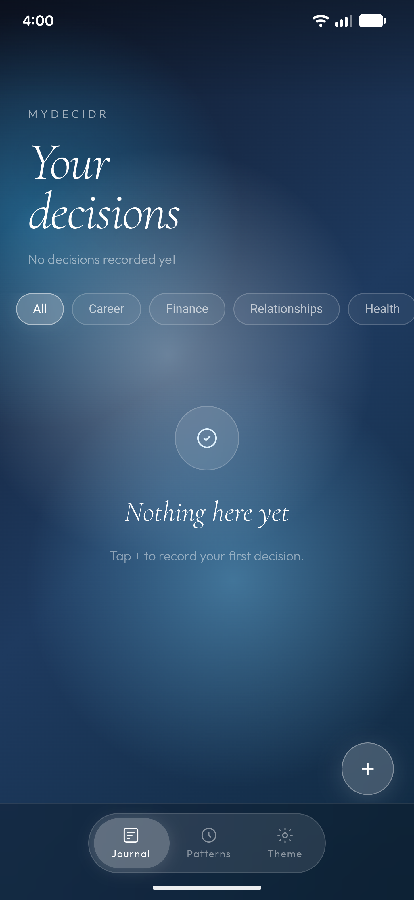
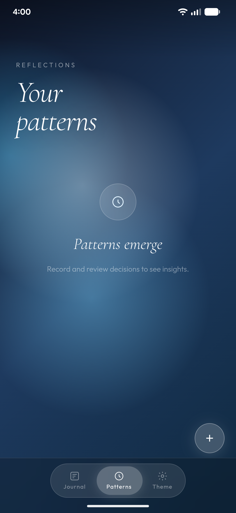
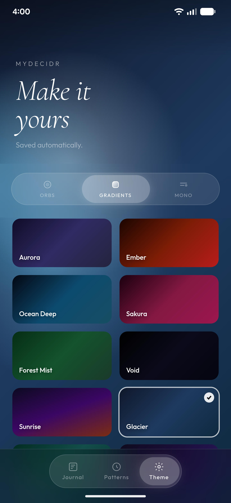
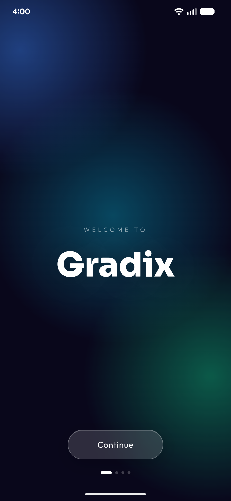
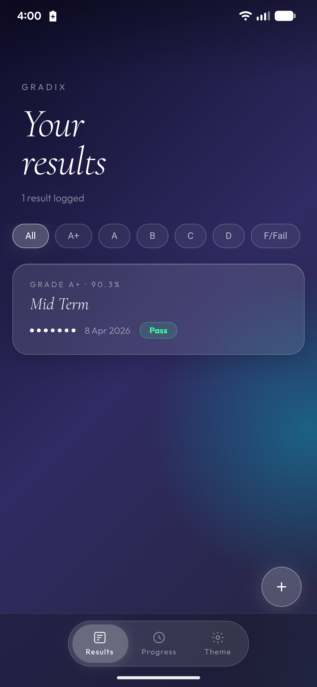
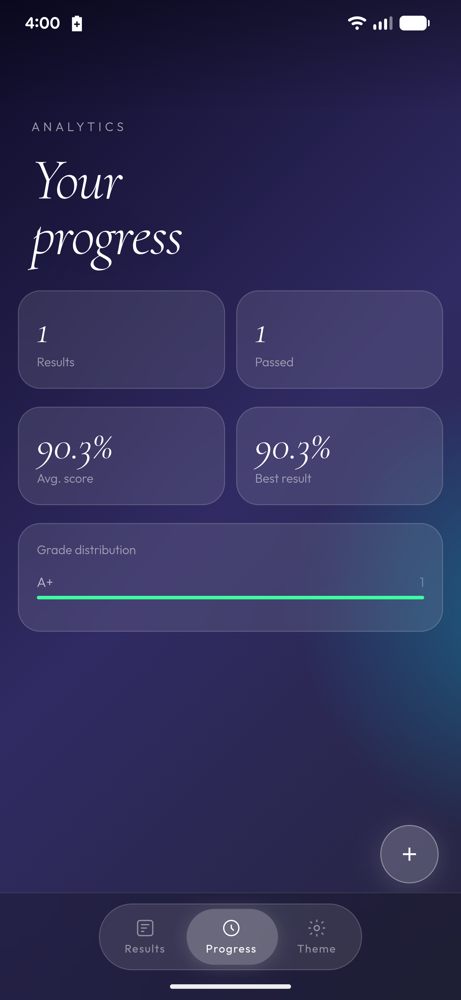
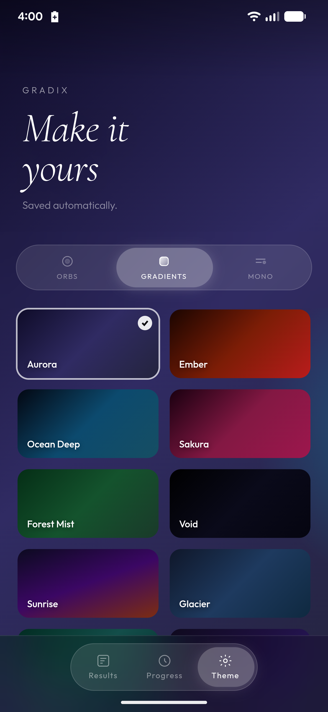

A small collection of apps designed with care — glassy, minimal, and purposeful.
Record the reasoning behind your choices — then come back to see how they played out.

1
2
3
4myDecidr helps you journal the decisions you make — capturing your reasoning, confidence, and expected outcome. Come back later to review how things turned out. Over time, patterns emerge and you understand your own thinking better.
Understand your performance. Track subjects, calculate GPA, see what matters.

1
2
3
4Gradix is a grade calculator and performance tracker. Enter your marks per subject and Gradix instantly calculates your percentage, grade, and overall result. Beautifully visualised with grade distribution charts so you always know where you stand.